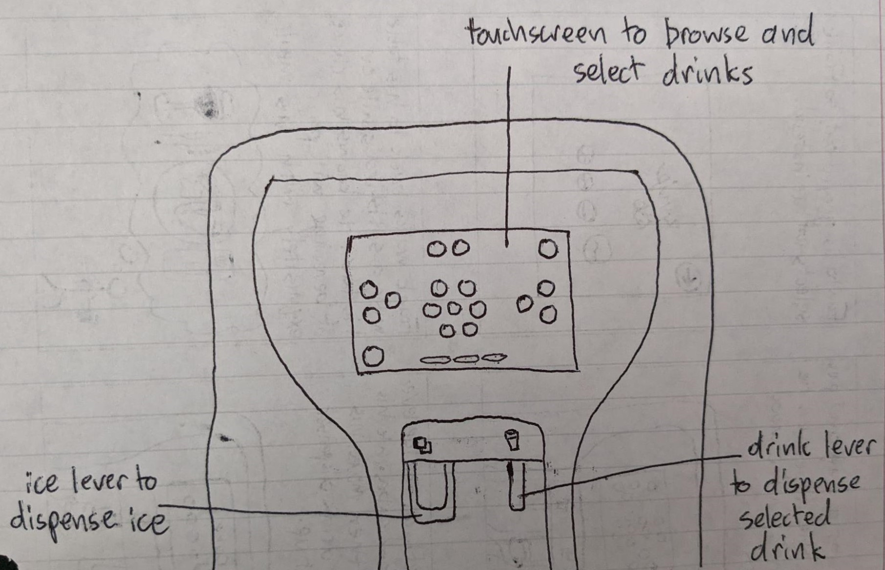
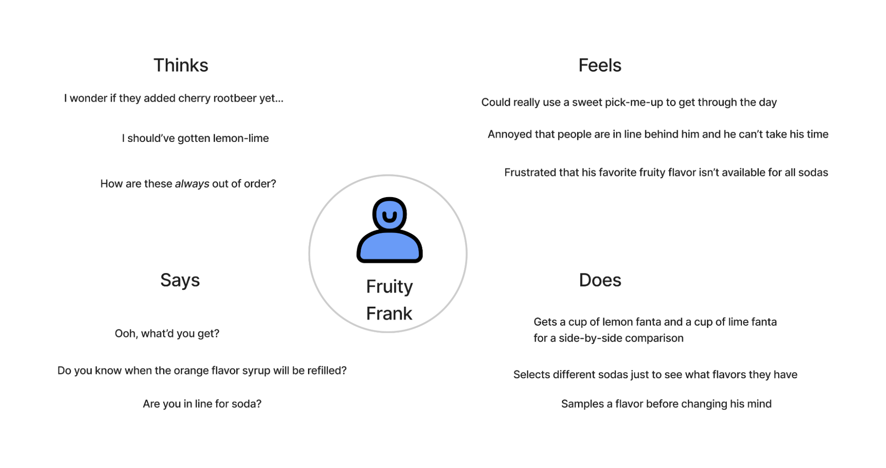
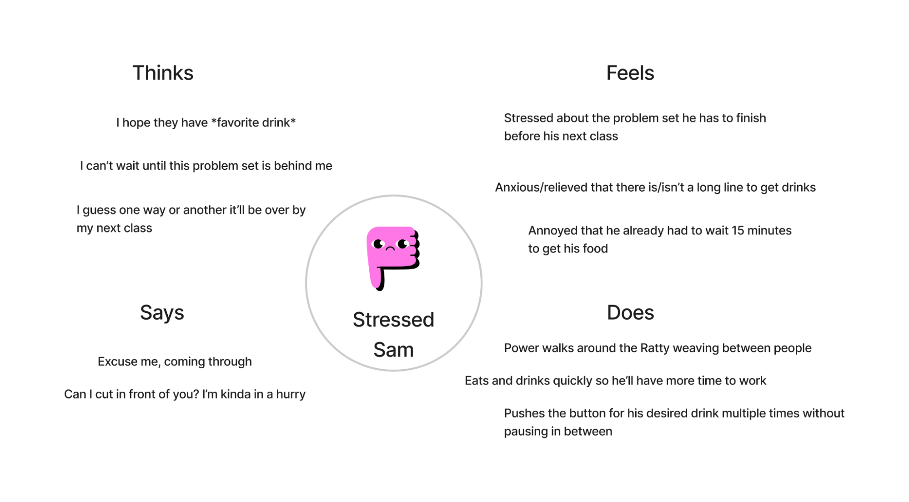
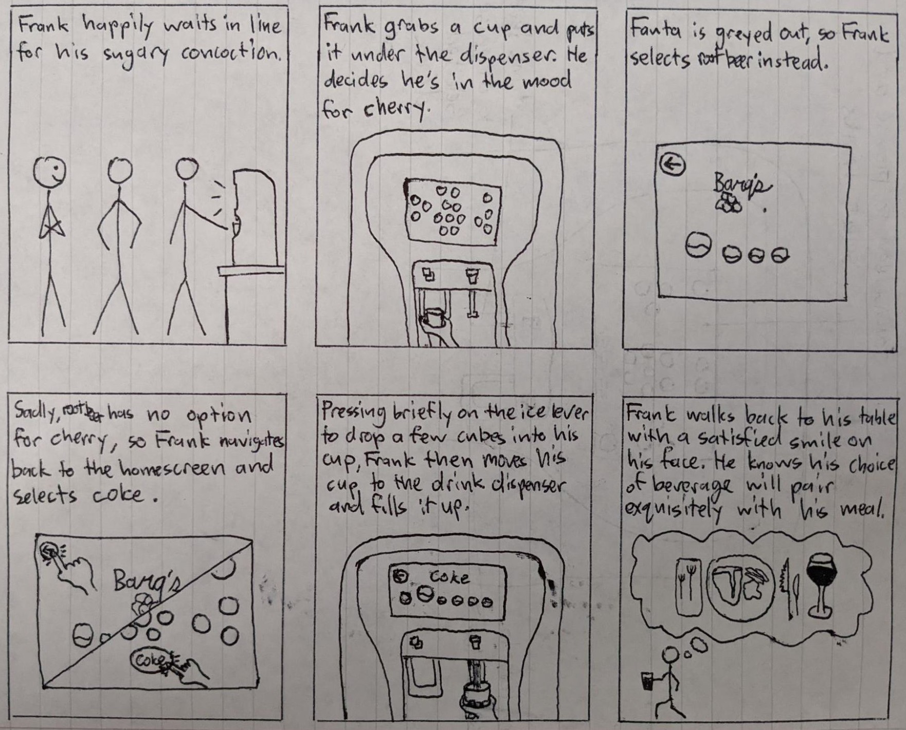

Personas & Storyboarding
Context
As the first project of the class, the goal was to learn to empathize with users and practice using some of the standard tools for getting into users' heads: creating user personas, and storyboarding. Students were asked to pick a publicly visible interface, observe its users, interview them, and construct user personas and a storyboard based on the information gained.
The Interface
For my interface, I decided to use the Coca-Cola Freestyle drink machines from the Ratty, the main dining hall on campus.
A diagram of the Freestyle machine. Major points of user interaction are labeled.
This interface attempts to solve the problem of users selecting and serving themselves one of the many drink options that it makes available. The touchscreen allows users to browse the available drinks by selecting first a type of soda and then displaying the flavor options available for the selection, while also offering the choice to go back to the home screen. Once a flavor is selected, the drink lever can be pressed by a cup to dispense the chosen beverage until it is released. The ice lever can also be used at any time to dispense ice into a cup in the same fashion.
User Observations & Interviews
To gather information with which to create personas and a storyboard, I observed several users interacting with the Freestyle machine interface and subsequently interviewed them about the interaction.
Observations
- Several users touched the screen multiple times before it seemed to register their selections
- Some users filled multiple cups of the same beverage
- One user lost their drink selection (it defaulted back to the home screen) while waiting for the carbonation in their beverage to fizzle out so they could keep filling their glass
- Several users selected a soda, looked at the available flavors for a moment, then went back and selected another soda
- A few repeated this multiple times before finally making a selection
Interview Questions
- How often (when you are at the Ratty) do you use one of the Coca-Cola freestyle machines?
- What is your favorite soda/flavor combination you’ve tried? Do you experiment a lot, or get the same ones over and over?
- If you were looking for another flavor you might like, is it more appealing to try another flavor of the same soda (i.e. going from cherry coke to vanilla coke) or to try another soda of the same flavor (i.e. going from cherry coke to cherry fanta)?
- Do you drink soda in other dining halls or restaurants with standard soda machines? Which do you prefer?
- Do you ever mix different drinks together? How many? Are they all usually from the freestyle machines, or are some from other drink stations?
Summary of Interviews
- All users interviewed use the freestyle machines regularly, most of the times that they go to the Ratty.
- Some get the same drink (or one of a small group of drinks) every time while some are more inclined to try new flavors/combinations.
- Most users said that the base soda mattered more to them than the flavor. One said that neither mattered to them more than the other individually, and that they cared more about how the soda and flavor paired together.
- Every user confirmed that they also drink soda (or comparable drinks available from the machines such as seltzer) in other settings without a Coca-Cola freestyle machine. Preferences are split; some users prefer standard soda machines for their simplicity and speed, while others prefer the variety and “creative possibilities” of the freestyle machines.
- Most users do not mix different types of drinks together. The one who did usually only added either water or seltzer to dilute the flavor and/or carbonate their other drink. That user would get the water/seltzer from the freestyle machine if they were already using it, and not from one of the dedicated water/seltzer stations the Ratty has.
Personas
Using my observations of users interacting with the interface combined with their responses to my interview questions, I came up with the following personas to represent two different archetypes of Freestyle machine user:
Frank is a freestyle connoisseur with a penchant for tangy and fruity flavors. Every time he's at the Ratty he knows he can count on a sweet treat to brighten up his day.

Sam is constantly behind on his schoolwork, and his mental state is that much worse off for it. All he wants in the dining hall is to get in and out with his favorite soda as quickly as possible so he has more time to work.
Storyboard
I decided to make a storyboard for the Fruity Frank persona, developing a better sense of the persona's goals and needs by imagining how a typical interaction with the interface might go.
Conclusion
This project was a definite success in that it allowed me to develop a much greater appreciation of both the importance of empathizing with an interface's users and the effort that it takes to do so. With this experience and these tools under my belt, I will be better able to design interfaces that truly cater to the needs of the users going forwards.